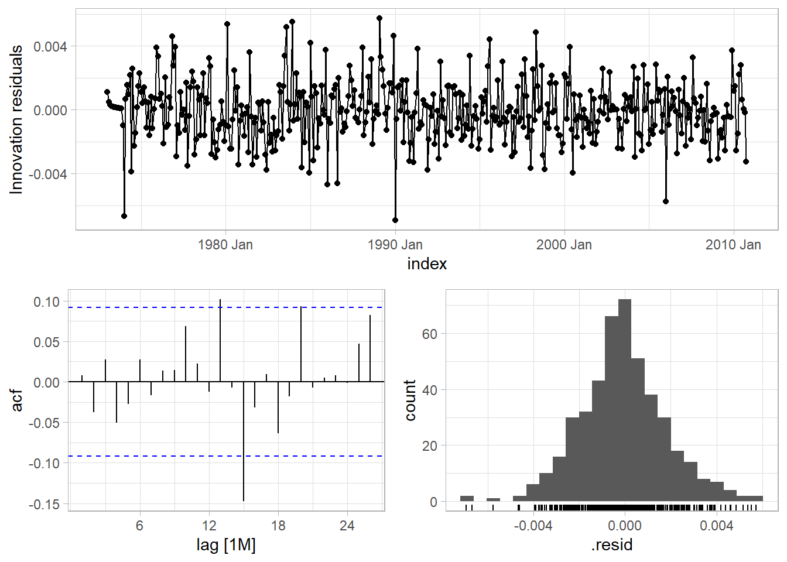
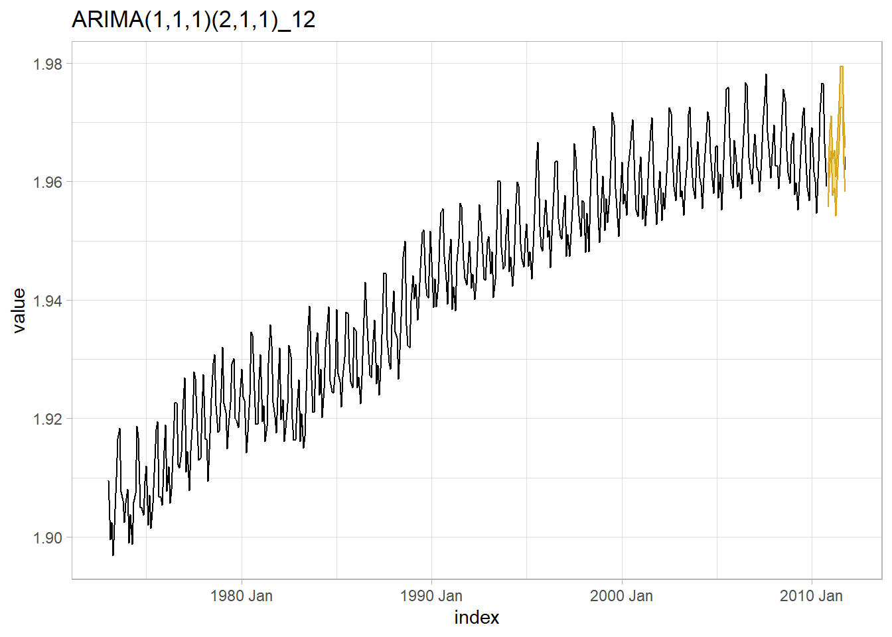

Chapter 5 ARIMA
Whereas exponential smoothing models describe trend and seasonality, ARIMA models describe autocorrelations.
An autoregressive, AR(p), model is a multiple regression with p lagged observations as predictors.
\[y_t = c + \phi_1 y_{t-1} + \phi_2 y_{t-2} + \dots + \phi_p y_{t-p} + \epsilon_t\]
A moving average, MA(q), model is a multiple regression with q lagged errors as predictors.
\[y_t = c + \epsilon_t + \theta_1 \epsilon_{t-1} + \theta_2 \epsilon_{t-2} + \dots + \theta_p \epsilon_{t-q}\]
An autoregressive moving average, ARMA(p, q), model is a multiple regression with p lagged observations and q lagged errors as predictors.
\[y_t = c + \phi_1 y_{t-1} + \dots + \phi_p y_{t-p} + \theta_1 y_{t-1} + \dots + \theta_p y_{t-q} + \epsilon_t\]
An ARMA model with differencing, ARIMA(p,d,q), model is an ARMA model with d levels of differencing.
Whereas exponential smoothing models can handle non-constant variance with multiplicative errors and seasonality, autoregressive models require that you explicitly transform the data into a stationary time series. A stationary time series is one in whose statistical properties do not depend on the time at which the series is observed: it has no trend, is homoscedastic, and has no seasonality. Stationary time series can have cyclical patterns, but no regular long term patterns. ARIMA analyses consists of making the data stationary, fitting the model(s), reversing the stationarity, then generating forecasts.
5.1 Stationary Time Series
The first step is to create a stationary time series. This typically involves a transformation of the response variable to remove heteroscedasticity, seasonal differencing to remove seasonality, and one-period differencing to remove trend.
Let’s work with the fpp::usmelec data set of us monthly electricity generation. Fig. 5.1 shows that this data has trend and non-constant variance.
elec <- fpp::usmelec %>%
as_tsibble()
elec %>%
as_tsibble() %>%
ggplot(aes(x = index, y = value)) +
geom_line() +
labs(title = "US Electricity Generation", y = "billion kWh", x = "Month")
Figure 5.1: Data series with trend and non-constant variance.
There are an infinite number of transformations, but the common ones (in increasing strength) are: square root, cube root, log, and inverse. Fig. 5.2 shows several transformations of the elec data set. Hyndman seems to stick with the log and that seems to work here.
elec %>%
as_tsibble() %>%
mutate(sqrt = value^.5, cubert = value^(1/3), log = log(value), inv = 1/value) %>%
rename(y = value) %>%
pivot_longer(-index) %>%
ggplot(aes(x = index, y = value)) +
geom_line() +
facet_wrap(vars(name), scales = "free_y") +
labs(title = "Common Transformations to Remove Heterscedasticity",
x = "Month", y = "billion kWh transformed")
Figure 5.2: Standard transformations may under- or over-shoot constant variance.
The Box-Cox transformation can find the optimal transformation (Fig. 5.3).
lambda <- features(elec, value, features = guerrero) %>% pull(lambda_guerrero)
elec2 <- elec %>% mutate(value = box_cox(value, lambda))
elec2 %>%
ggplot(aes(x = index, y = value)) +
geom_line() +
theme_light() +
labs(title = glue("Box-Cox Transformation, lambda = {number(lambda, .001)}."),
x = "Month", y = "billion kWh transformed")
Figure 5.3: Box-Cox transformation produces constant variance.
After transforming the response variable, use differencing of successive observations to stabilize the level. In the case of seasonal data, take a seasonal difference (12 observation difference for monthly data), then possibly take a second one-observation difference (Fig. 5.4).
x1 <-
elec2 %>%
rename(`Non-Transformed` = value) %>%
mutate(
`Seasonal Difference` = difference(`Non-Transformed`, 12),
`1-period Difference` = difference(`Seasonal Difference`, 1)
)
x2 <-
bind_rows(
`Non-Transformed` = x1 %>% feasts::ACF(`Non-Transformed`) %>% as_tibble(),
`Seasonal Difference` = x1 %>% feasts::ACF(`Seasonal Difference`) %>% as_tibble(),
`1-period Difference` = x1 %>% feasts::ACF(`1-period Difference`) %>% as_tibble(),
.id = "transformation"
) %>%
mutate(transformation = fct_inorder(transformation))
series_n <-
x1 %>%
as_tibble() %>%
pivot_longer(-index, names_to = "transformation") %>%
filter(!is.na(value)) %>%
mutate(transformation = factor(transformation, levels = levels(x2$transformation))) %>%
summarize(.by = transformation, n = n())
x2 %>%
ggplot() +
geom_segment(aes(x = lag, xend = lag, y = 0, yend = acf), color = "steelblue") +
geom_point(aes(x = lag, y = acf), size = 2, color = "steelblue") +
geom_hline(yintercept = 0, color = "gray20") +
geom_hline(data = series_n, aes(yintercept = qnorm(.975) / sqrt(n)),
linetype = 2, color = "goldenrod") +
geom_hline(data = series_n, aes(yintercept = qnorm(.025) / sqrt(n)),
linetype = 2, color = "goldenrod") +
scale_y_continuous(limits = c(-.2, 1.0)) +
theme(panel.grid = element_blank()) +
labs(y = "ACF", title = "ACF before and after differencing.") +
facet_wrap(facets = vars(transformation), nrow = 1)
Figure 5.4: ACF before and after differencing.
perform a Ljung-Box test on the transformed data.
elec3 <- elec2 %>%
mutate(
value = difference(value, 12),
value = difference(value, 1)
)
(elec_jung <- elec3 %>% features(value, ljung_box, lag = 10))## # A tibble: 1 × 2
## lb_stat lb_pvalue
## <dbl> <dbl>
## 1 72.9 1.20e-11The ACF of the twice-differenced values is white noise (Ljung-Box Q = 72.94, p = 0.000, Fig. 5.5).
elec3 %>%
ggplot(aes(x = index, y = value)) +
geom_line() +
theme_light() +
labs(title = glue("US Electricity Generation, Stationary."),
x = "Month", y = "billion kWh")
Figure 5.5: Box-Cox transformation plus double-differencing produces stationary time series with constant variance.
5.2 Autoregressive: AR(p)
Autoregressive models, AR(p), forecast the response variable as a linear combination of past observations.
\[y_t = c + \phi_1 y_{t-1} + \phi_2 y_{t-2} + \dots + \phi_p y_{t-p} + \epsilon_t\]
where p is the order of regression and \(\epsilon_t\) is white noise. \(\phi_k\) is the correlation between \(y_t\) and \(y_{t-k}\) after removing the effects of lags \(1, \ldots, k-1\). If \(\phi_1\) = 0 and c = 0, \(y_t\) is white noise. If \(\phi_1\) = 1 and c = 0, \(y_t\) is a random walk. If \(\phi_1\) = 1 and c != 0, \(y_t\) is a random walk with drift. If \(\phi_1\) < 0, \(y_t\) oscillates around the mean.
5.3 Moving Average: MA(q)
Moving average models, MA(q), forecast the response variable as a linear combination of q lagged errors.
\[y_t = c + \epsilon_t + \theta_1 \epsilon_{t-1} + \theta_2 \epsilon_{t-2} + \dots + \theta_p \epsilon_{t-q}\]
where \(\epsilon_t\) is white noise and q is the order of the regression. The model is denoted AR(q).
5.4 Non-Seasonal: ARIMA(p, d, q)
An autoregressive integrated moving average (ARIMA) model combines differencing with the AR and MA model. In this context integration is the opposite of differencing.
\[y'_t = c + \phi_1 y'_{t-1} + \dots + \phi_p y'_{t-p} + \theta_1 \epsilon_{t-1} + \theta_2 \epsilon_{t-2} + \dots + \theta_p \epsilon_{t-q} + \epsilon_t\]
where \(y'_t\) is the differenced series (possibly multiple differences) and d is the order of differencing. The model is denoted ARIMA(p, d, q).
5.5 Seasonal: ARIMA(p, d, q)(P, D, Q)m
A seasonal ARIMA model is formed by including additional seasonal components.
5.6 Fitting an ARIMA Model
Fit an ARIMA model to non-seasonal time series data with the following steps:
- Plot the data. Identify unusual observations, seasonality, and/or heteroscedasticity.
- Transform the data with a Box-Cox transformation to stabilize the variance (if necessary).
- Take one (or at most two) first differences to make the data stationary (if necessary).
- Plot the ACF/PACF to decide whether an ARIMA(p, d, 0) (autoregressive) or ARIMA(0, d, q) (moving average) model is appropriate.
- Use the AICc to search for the best model.
- Verify the residuals are white noise by plotting the ACF of the residuals and performing a portmanteau test of the residuals.
- Forecast future values.
ARIMA() does steps 3-5 automatically. Use the model with the minimum Akaike’s Information Criterion (AIC or AICc) or Bayesian Information Criterion (BIC) to choose the order of an ARIMA model (p and q).
\[AIC = −2 \log(L) + 2(p + q + k + 1)\]
where \(L\) is the likelihood of the data, \(k = 1\) if \(c \ne 0\) and 0 if \(c = 0\).
\[AICc = AIC + \frac{2(p + q + k + 1)(p + q + k + 2)}{T - p - q - k - 2}\] \[BIC = AIC + (\log(T) - 2)(p + q + k + 1)\]
fable uses maximum likelihood estimation (MLE) to find model parameter values which maximize the probability of obtaining the observed data. In practice, fable maximizes the log likelihood.
Returning to the fpp::usmelec data set, recall from Fig. 5.1 that the data was non-stationary: it had heteroscedasticity, seasonality, and trending. A Box-Cox transformation corrected the heteroscedasticity. A seasonal difference and one-period difference corrected the seasonality and trending. We can assess the differencing portion with a diagnostic plot. I’ll repeat the Box-Cox part below for completeness.
lambda <- features(elec, value, features = guerrero) %>% pull(lambda_guerrero)
elec2 <- elec %>% mutate(value = box_cox(value, lambda))
elec2 %>%
gg_tsdisplay(difference(value, 12) %>% difference(), plot_type = "partial", lag = 36) +
labs(title = "Double-Differenced", y = NULL)Figure 5.6: Double-differenced fpp::usmelec data with ACF and PACF plots.
The seasonal part of an AR or MA model is revealed in the seasonal lags of the PACF and ACF. There is a spike in the ACF at lag 12. The PACF has decaying spikes at 12, 24, and 36.
The significant spike at lag 2 in the ACF suggests a non-seasonal MA(2) component. The significant spike at lag 12 suggests a seasonal MA(1). Model this as ARIMA(0,1,2)(0,1,1)12.
The significant spike at lag 2 in the PACF suggests a non-seasonal AR(2) component. Model this as ARIMA(2,1,0)(0,1,1)12.
Let’s try them both. By not specifying p, d, and q, ARIMA() will automatically perform steps 3-5 above to find the best values. If you want a more complete models space, specify stepwise = FALSE.
arima_fit <-
elec2 %>%
model(
arima_012_011 = ARIMA(value ~ pdq(0,1,2) + PDQ(0,1,1)),
arima_210_011 = ARIMA(value ~ pdq(2,1,0) + PDQ(0,1,1)),
arima_stepwise = ARIMA(value),
arima_gridsearch = ARIMA(value, stepwise = FALSE)
)
arima_fit %>% pivot_longer(everything())## # A mable: 4 x 2
## # Key: name [4]
## name value
## <chr> <model>
## 1 arima_012_011 <ARIMA(0,1,2)(0,1,1)[12]>
## 2 arima_210_011 <ARIMA(2,1,0)(0,1,1)[12]>
## 3 arima_stepwise <ARIMA(1,1,1)(2,1,1)[12]>
## 4 arima_gridsearch <ARIMA(1,1,1)(2,1,1)[12]>ARIMA() optimized to ARIMA(1,1,1)(2,1,1)12. The AICc measures are close, but the stepwise/gridsearch model have lower values.
## # A tibble: 4 × 8
## .model sigma2 log_lik AIC AICc BIC ar_roots ma_roots
## <chr> <dbl> <dbl> <dbl> <dbl> <dbl> <list> <list>
## 1 arima_012_011 0.00000369 2133. -4257. -4257. -4241. <cpl [0]> <cpl [14]>
## 2 arima_210_011 0.00000394 2118. -4228. -4227. -4211. <cpl [2]> <cpl [12]>
## 3 arima_stepwise 0.00000365 2135. -4259. -4259. -4234. <cpl [25]> <cpl [13]>
## 4 arima_gridsearch 0.00000365 2135. -4259. -4259. -4234. <cpl [25]> <cpl [13]>The ACF plot for the stepwise/gridsearch model shows that all autocorrelations up to lag 12 are within the threshold limits.

A portmanteau test suggests the residuals are indeed white noise.
arima_fit %>%
augment() %>%
filter(.model == "arima_stepwise") %>%
features(.innov, ljung_box, lag = 36, dof = 6)## # A tibble: 1 × 3
## .model lb_stat lb_pvalue
## <chr> <dbl> <dbl>
## 1 arima_stepwise 35.8 0.213arima_111_211_fc <-
arima_fit %>%
select(arima_stepwise) %>%
forecast(h = 12) %>%
hilo(80) %>%
mutate(
lpi = map_dbl(`80%`, ~.$lower),
upi = map_dbl(`80%`, ~.$upper)
)
arima_fit %>%
augment() %>%
filter(.model == "arima_stepwise") %>%
ggplot(aes(x = index)) +
geom_line(aes(y = value)) +
geom_line(data = arima_111_211_fc, aes(y = .mean)) +
geom_ribbon(data = arima_111_211_fc, aes(ymin = lpi, ymax = upi),
color = "goldenrod", fill = "lightgoldenrod") +
labs(color = NULL, fill = NULL,
title = "ARIMA(1,1,1)(2,1,1)_12")
R function auto.arima() from the forecast package chooses the optimal ARIMA model parameters using the Akaike criterion.6
Use a unit root test to verify stationarity.
## # A tibble: 1 × 2
## kpss_stat kpss_pvalue
## <dbl> <dbl>
## 1 0.0159 0.1The p-value is reported as .1 if it is greater than .1. In this case the test statistic of 0.0159 is smaller than the 1% critical value so the p-value is greater than .1. The null hypothesis is not rejected, meaning the data is assumed stationary.
You can use the Akaike criterion to compare models of the same class, but not different models, so do not use it to compare an ARIMA model to an ETS model. You cannot use the Akaike criterion for models of different levels of differencing.↩︎